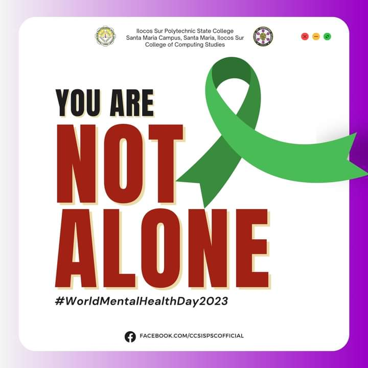
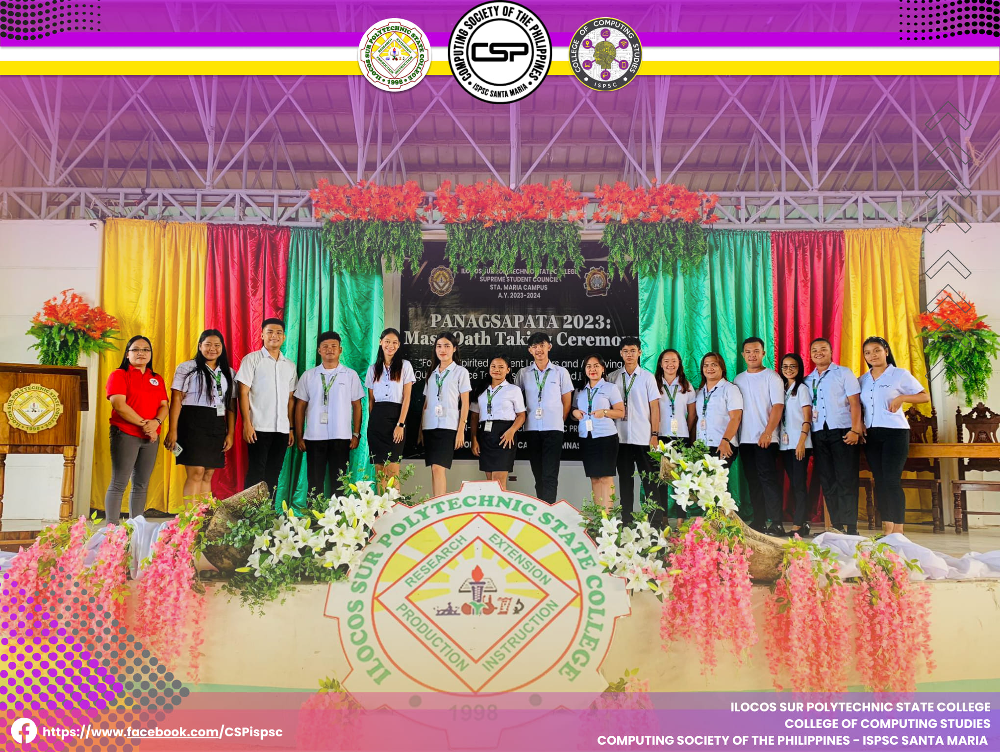
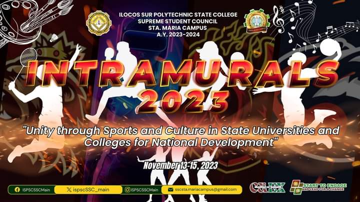

Teacher's Day is a special occasion dedicated to honoring and appreciating the remarkable contributions of teachers in shaping the lives of students and society at large. On this day, students and communities express their gratitude for the dedication, patience, and enthusiasm that teachers bring to their classrooms every day. It is a time to recognize the pivotal role teachers play in nurturing young minds, imparting knowledge, and instilling valuable life lessons. Teachers inspire, mentor, and guide their students, fostering a love for learning that lasts a lifetime. Their influence reaches far beyond the classroom, shaping the future of nations by empowering the next generation. On Teacher's Day, let us celebrate these unsung heroes, acknowledging their hard work and unwavering commitment to education. Their efforts pave the way for a brighter, more enlightened future for all

World Mental Health Day, observed annually on October 10th, is a global initiative that highlights the importance of mental health education, awareness, and advocacy. It's a day when individuals, communities, and organizations around the world come together to show support for mental health, promote mental well-being, and raise awareness about mental health issues. The day serves as a powerful reminder that mental health is a fundamental aspect of our overall well-being and that it's essential to prioritize self-care and seek help when needed. By acknowledging the significance of mental health and fostering a compassionate and understanding society, we can create a world where everyone has access to the support and resources they need to maintain good mental health. Together, we can break the stigma surrounding mental health and build a more inclusive and supportive global community.

The "Panagsapata" Mass-Oath Taking Ceremony takes place for the accredited and mandated organization officers to pledge their commitment to their duties and service as student leaders of ISPSC Sta. Maria Campus, A.Y. 2023-2024. This program features several excellence-driven advices and notable leadership instructions from the esteemed and active guest speakers, headed by Dr. Danilo B. Bose, OIC, Office of the SUC President III, with the theme "Forging Spirited Student Leaders and Achieving Quality Service Towards Harmony and Excellence". Over twenty-five accredited and mandated organization attended the program, including Computing Society of the Philippines (CSP) officers. Headed by CSP President Hillary Buis, she and her fellow officers took their vows for quality service towards harmonious and excellent leadership.

ISPSC Sta. Maria Campus Intramural Meet 2023 with the theme Unity Through Culture, Arts, and Sports in State Universities and Colleges for National Development.
Who will reign supreme?
Who will emerge victorious?
💛CAFED-BLAZING PHOENIX
💚CBME-MIGHTY LIONS
💜CCS - CYBERPUNKS
💙CTE/LHS-BLUE BADGERS